01 · Enable
People build the capability to move forward.
Clear responsibilities, stakeholder involvement and practical training help teams understand the change and take ownership of it. Without that, the best platform stays unused.
Global GES · Consulting · Technology · Transformation
Global GES helps government and enterprise organisations transform by aligning people, processes and technology, from the first assessment to everyday delivery.
AdviseDirection, strategy and enterprise architecture.
DesignArchitecture, processes and implementation plans.
DeliverImplementation, integration and handover.
OperateManaged services, support and continuous improvement.
Who we are
Global Experts Services is an IT services and consultation firm serving government entities, enterprise corporations and global institutions. We connect consultation with implementation, integration, handover and ongoing support, so technology decisions never exist in isolation.
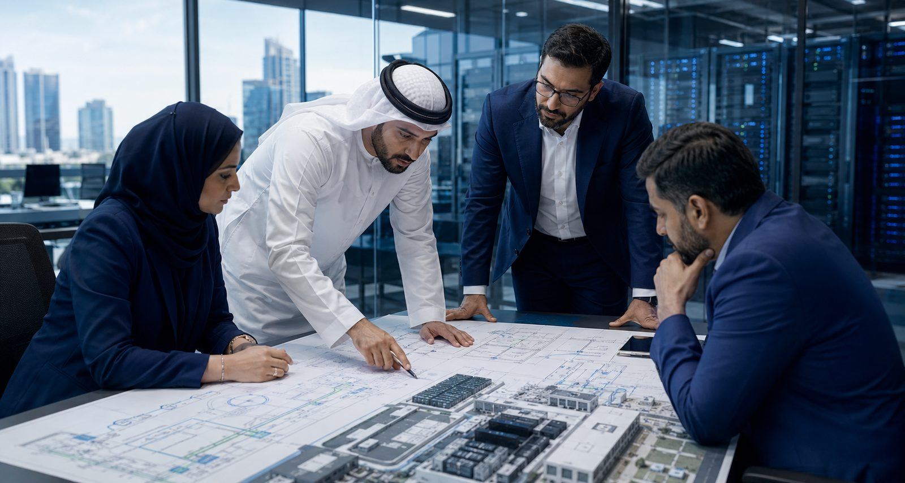
GES consultants with a client's leadership team
Our philosophy
People× Processes× Technology
01 · Enable
Clear responsibilities, stakeholder involvement and practical training help teams understand the change and take ownership of it. Without that, the best platform stays unused.
02 · Align
Governance, service management and consistent delivery practices connect individual activities to organisational priorities, so improvement survives the people who started it.
03 · Connect
Architecture, platforms and infrastructure should support how an organisation works, integrates, protects its information and evolves. Technology serves the first two, not the other way round.
Together
Sustainable transformation depends on people, processes and technology working as one. Each is essential. None works in isolation. That intersection is where GES works.
Our capabilities
The capabilities that connect your business priorities with your technology environment.
01
Set a clear direction for change.
Define priorities, plan delivery and align technology decisions with your organisation's needs.
02
Build confidence into your operations.
Assess risks, strengthen controls and establish the frameworks that protect critical information and operations.
03
Connect the digital foundation.
Bring the platforms, infrastructure and data capabilities together to support enterprise operations.
04
Make technology work every day.
Connect service delivery, ongoing support and capability development to sustain the working environment.
Why GES
Strategy, enterprise architecture and project leadership that align technology decisions with business direction.
Consulting, implementation and operational support across the technology lifecycle, with less handover and more accountability.
Established international technology providers, selected on cost, references, performance, usability and integration.
Multidisciplinary teams that move from assessment to a working environment rather than a slide deck.
International standards with knowledge of the markets in which our clients operate, across the Gulf, the wider Middle East and Europe.
Recognised methodologies and qualifications including PMI, PRINCE2, ITIL, CMMI, Six Sigma and GAQM, and organisational certification to ISO 27001, 20000-1, 22301, 38500 and 42001.
The transformation lifecycle
Every engagement has a different starting point. GES supports clients throughout transformation, connecting assessment, planning and execution with the support needed afterwards.
01
Understand before you act. Review the current environment, business requirements, risks and opportunities.
02
Agree the direction. Align technology priorities with business objectives and define the roadmap for change.
03
Connect the details. Develop the architecture, processes and plans that turn direction into a workable solution.
04
Put the plan into practice. Coordinate delivery, integration and project activities around the agreed scope.
05
Support the working environment. Operational support, maintenance and monitoring relevant to the engagement.
06
Keep improving. Review performance and changing needs to identify where the environment can be refined.
Assess → Strategise → Design → Implement → Operate → Optimise
Our approach in detail →Technology ecosystem
GES does more than resell technology. We select, consult, implement, integrate, operate and support, backed by a 24/7 support centre, so the solution fits the wider operating environment.
Enterprise requirement
Technology selection is based on criteria that matter to the business, not to a product catalogue.
Global GES
Plus a 24/7 support centre that keeps the environment working after go-live.
Technology partners
Platforms chosen for the task, integrated into the client's environment and supported over time.
Exclusive partner · IT service management
Alemba
Collibra
Data governance
NAVEX
Governance, risk & compliance
MetricStream
Governance, risk & compliance
Lansweeper
IT asset discovery
Omnissa
Digital workspace
Avolution
Enterprise architecture
Run2Biz
Service management
Citsmart Central
Service management
Central IT
Role to confirm
Simpliix
Role to confirm
65A Tecnologia / Carreira
Role to confirm
Selected projects
Engagements across government, banking, healthcare, transport and industry, each connecting a business priority to a working technology environment.
image — hospital campus, early morning
Data Management Office establishment using NDMO and DAMA best practices.
image — rail infrastructure, dawn
Data centre expansion and upgrade to Tier-3 standard.
image — bank headquarters interior
Alemba ASM service management system.
image — corporate headquarters, Amman
Enterprise risk management aligned with ISO 31000.
Also: Ministry of Industry & Mineral Resources, CNN Türk, The Authority of Awqaf, Alinma Bank, King Fahad Medical City, Ministry of Transport Oman.
All projects →Clients & institutions
Leading banks, ministries, universities, utilities and government entities across the Gulf and beyond.
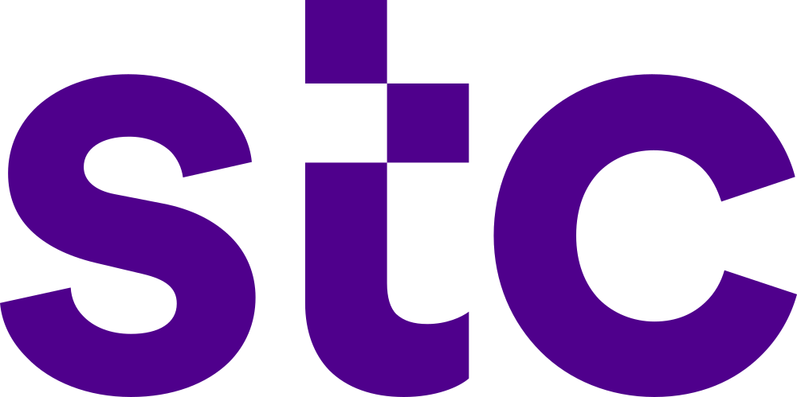
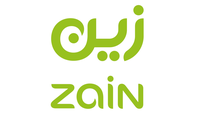
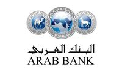
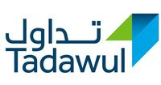
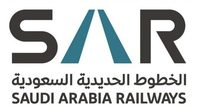
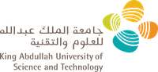
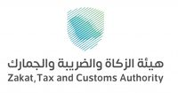
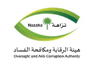
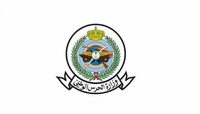
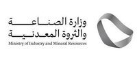
Regional presence
Five hubs across Europe and the Middle East, one hour apart at most from London to the Gulf, so the right specialist is in the client's working day.
Start a conversation
Tell us about the business challenge, the technology environment or the change you are planning.
People × Process × Technology
LondonTürkiyeKSABahrainUAE